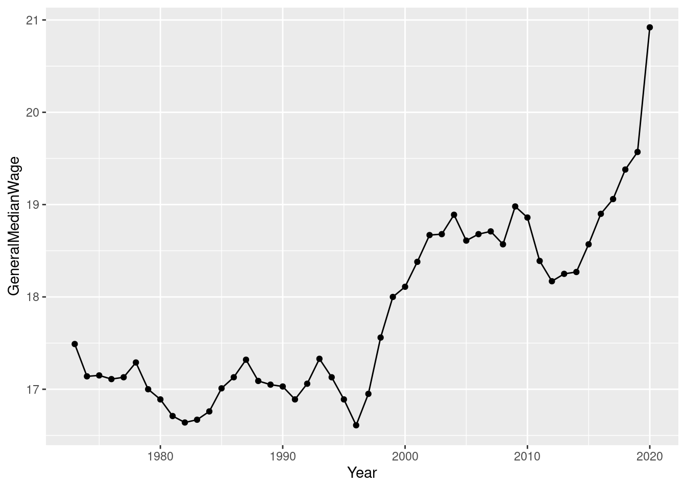
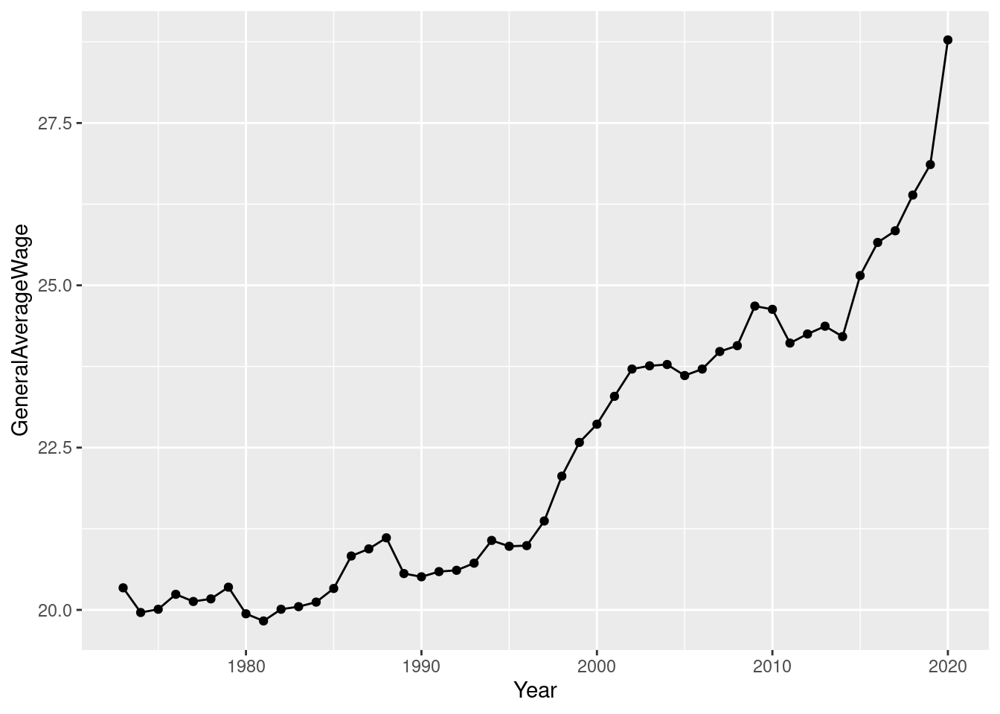

Now that you have established that Inflation increasing at a higher rate than wages. Lets see how bad of an issue this seems to be.
library(readxl)
DatasetForRProject <- read_excel("DatasetForRProject.xlsx")summary(DatasetForRProject)## Year GeneralMedianWage GeneralAverageWage AverageWage_LessthanHS
## Min. :1973 Min. :16.61 Min. :19.83 Min. :12.34
## 1st Qu.:1985 1st Qu.:17.05 1st Qu.:20.35 1st Qu.:13.16
## Median :1996 Median :17.41 Median :21.24 Median :13.50
## Mean :1996 Mean :17.83 Mean :22.38 Mean :13.86
## 3rd Qu.:2008 3rd Qu.:18.62 3rd Qu.:24.08 3rd Qu.:14.39
## Max. :2020 Max. :20.92 Max. :28.78 Max. :15.98
## AverageWage_Highschool AverageWage_Somecollege AverageWage_Bachelor'sdegree
## Min. :17.36 Min. :19.50 Min. :26.57
## 1st Qu.:18.03 1st Qu.:19.93 1st Qu.:28.16
## Median :18.41 Median :20.50 Median :29.57
## Mean :18.42 Mean :20.48 Mean :30.51
## 3rd Qu.:18.93 3rd Qu.:20.95 3rd Qu.:32.78
## Max. :20.09 Max. :22.51 Max. :36.84
## AverageWage_Advanceddegree ConsumerPriceIndex
## Min. :31.24 Min. : 42.7
## 1st Qu.:33.97 1st Qu.:104.8
## Median :38.55 Median :157.1
## Mean :38.49 Mean :154.4
## 3rd Qu.:42.02 3rd Qu.:212.0
## Max. :47.54 Max. :258.7The General Average Wage has much higher measures of spread than median measures of spread. This may indicate that there are large outliers influencing the average wage to be higher. If we look at wages-by-degree, it seems like having a degree is much more helpful for wages than not having a degree.
library(ggplot2)
ggplot(data=DatasetForRProject, aes(x=Year, y=GeneralMedianWage, group=1)) +
geom_line()+
geom_point()
ggplot(data=DatasetForRProject, aes(x=Year, y=GeneralAverageWage, group=1)) +
geom_line()+
geom_point()
This seems like average has less point-to-point variation than the median wage category. Overall, it seems like Wages increase over time and sharply over the past 20 years.
##Correlations
library(Hmisc)
flattenCorrMatrix <- function(cormat, pmat) {
ut <- upper.tri(cormat)
data.frame(
row = rownames(cormat)[row(cormat)[ut]],
column = rownames(cormat)[col(cormat)[ut]],
cor =(cormat)[ut],
p = pmat[ut]
)
}
res2<-rcorr(as.matrix(DatasetForRProject[,1:9]))
Corr <-flattenCorrMatrix(res2$r, res2$P)
Corr[ , c("row", "column","cor")] ## row column cor
## 1 Year GeneralMedianWage 0.83832909
## 2 Year GeneralAverageWage 0.93869280
## 3 GeneralMedianWage GeneralAverageWage 0.96132484
## 4 Year AverageWage_LessthanHS -0.57634612
## 5 GeneralMedianWage AverageWage_LessthanHS -0.16103364
## 6 GeneralAverageWage AverageWage_LessthanHS -0.29728610
## 7 Year AverageWage_Highschool 0.06150603
## 8 GeneralMedianWage AverageWage_Highschool 0.55545945
## 9 GeneralAverageWage AverageWage_Highschool 0.38884246
## 10 AverageWage_LessthanHS AverageWage_Highschool 0.65097182
## 11 Year AverageWage_Somecollege 0.34998285
## 12 GeneralMedianWage AverageWage_Somecollege 0.77269419
## 13 GeneralAverageWage AverageWage_Somecollege 0.60810850
## 14 AverageWage_LessthanHS AverageWage_Somecollege 0.23709177
## 15 AverageWage_Highschool AverageWage_Somecollege 0.84547884
## 16 Year AverageWage_Bachelor'sdegree 0.92673680
## 17 GeneralMedianWage AverageWage_Bachelor'sdegree 0.95319894
## 18 GeneralAverageWage AverageWage_Bachelor'sdegree 0.97584316
## 19 AverageWage_LessthanHS AverageWage_Bachelor'sdegree -0.38594317
## 20 AverageWage_Highschool AverageWage_Bachelor'sdegree 0.36629779
## 21 AverageWage_Somecollege AverageWage_Bachelor'sdegree 0.65109544
## 22 Year AverageWage_Advanceddegree 0.96211970
## 23 GeneralMedianWage AverageWage_Advanceddegree 0.89820355
## 24 GeneralAverageWage AverageWage_Advanceddegree 0.95262204
## 25 AverageWage_LessthanHS AverageWage_Advanceddegree -0.53697192
## 26 AverageWage_Highschool AverageWage_Advanceddegree 0.20351394
## 27 AverageWage_Somecollege AverageWage_Advanceddegree 0.51490106
## 28 AverageWage_Bachelor'sdegree AverageWage_Advanceddegree 0.97352155
## 29 Year ConsumerPriceIndex 0.99835114
## 30 GeneralMedianWage ConsumerPriceIndex 0.81716732
## 31 GeneralAverageWage ConsumerPriceIndex 0.92328562
## 32 AverageWage_LessthanHS ConsumerPriceIndex -0.60530401
## 33 AverageWage_Highschool ConsumerPriceIndex 0.01881394
## 34 AverageWage_Somecollege ConsumerPriceIndex 0.31764249
## 35 AverageWage_Bachelor'sdegree ConsumerPriceIndex 0.91234024
## 36 AverageWage_Advanceddegree ConsumerPriceIndex 0.95349284There are high correlations between Consumer Price Index and median wage, average wage, Bachelor’s Degree, and Advanced Degree. There was not a high correlation with wages for some college, High School, and less than High School. This is highly concerning. This means that over time, individuals who receive less than a Bachelor’s degree are not keeping up with inflation as much as a college degree. Also, the correlation is negative for people who do not have a high school diploma. This indicates that as the Consumer Price Index increases over time, people with a high school diploma actually have their wages decrease.
##Conclusions
The results from the correlations were extremely interesting and shed light on our situation in the United States. Individuals who have a College Degree seem to have wages that keep up with inflation. Those who do not have a degree, but have a high school education, increase over time. But not at the same pace as inflation. The worth of their wages are slowly eroding over time. For those without a high school diploma, their wages actually decrease as inflation increases.
With inflation in the United States at a high in recent history, it seems that those with a college diploma will be better off than those without.